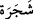
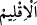
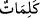

insana verilen tüm hikmet ve ma‘rifetler, yahudilerin nazarında çok gözükse de, Allâh’ın
ilim denizinden sadece bir damla mesabesindedir.
Katâde şöyle demiştir ki: “Bu âyet müşriklerin “Kur’ân bitmek ve tükenmek
üzeredir” demelerine bir cevap olarak nâzil olmuştur.”
“, gövdesi/bedeni olan bitki demektir. Tekil olarak getirilmesi, ağacın bütün
ferdlerini ayrı ayrı belirtmek maksadıyladır. Yâni ağaç cinsinden hiçbir ağaç
kalmayacak şekilde hepsi kalem olarak yontulsa, demektir. “ (kalem)”in asıl anlamı,
tırnak gibi sert bir şeyi kesmek, kısaltmak demektir. Bu kelime kendisiyle yazı yazılan
şeye isim olmuştur. Keşfü’l-esrâr’da şöyle denilir: “Kalem, başı kesildiği için “kalem”
diye isimlendirilmiştir. “ (iklim)”, yeryüzünden bir parçadır. “,
tırnakları kesip kısaltmak anlamındadır. “ ile “ kelimeleri arasında da fark
vardır. “ genişliğine, “ ise uzunluğuna kesmek demektir. “ ise bir cismi,
(bıçak, testere gibi) içine nüfûz eden başka bir cisimle kesip ikiye ayırmaktır.
Âyette bahsedilen “deniz”, birbirine bitişik veya ayrı bütün denizlerin maddesinin
kendisinden olduğu en büyük deniz/büyük okyanustur. Öyle bir deniz ki onun sâhilini ve
derinliğini Allah’tan başka kimse bilmez. Yeryüzündeki bütün denizler onun
kanallarıdır. Allâh’ın lâneti üzerine olsun, İblis’in arşı bu denizdedir. Orada su üzerinde
yüzen şehirler vardır. Orada kalanlar cinlerdir. Burası yeryüzünde harap vaziyette duran
dörtte bir kısma mukabildir. Bu denizde karada biten diğer ağaçlar gibi mercan ağacı
biter. Orada Allah Teâlâ’dan başka kimsenin bilmediği nice meskûn ve boş adalar
vardır. Es’iletü’l-hikem’de: “Allah Teâlâ dünyâyı yedi deniz ve yedi iklimle
süslemiştir.” der.
Gördüğümüz
kadarıyla
müfessirler
âyette
geçen
yedi
denizi
saymaya
girişmemişlerdir. Biz bu yedi denizi yaklaşık olarak yerlerinden çıkardık ve bu hususta
kalem oynattık. “Yedi deniz” ile Fırat, Dicle, Seyhan, Seyhun, Ceyhan, Ceyhun ve Nil
gibi nehirlerin kasdedilmiş olması da muhtemeldir. Çünkü Araplara göre deniz, çok su
mânâsına gelir. Kâşifî bu ifâdeyi: “Onun (bahr-i muhîtin) benzeri yedi deniz” diye
açıklamıştır. Bu durumda, âşikârdır ki “yedi” rakamı adet değil çokluk bildirmek için
olmuş olur.
el-İrşâd’da denilir ki: “Katılmanın/eklenmenin, bütün denizlerden daha büyük ve çok
olduğu halde bahr-i muhît, yâni okyanusa değil de ondan daha küçük olan yedi denize
isnâd edilmesi, onların dağlara ve akan su kaynaklarına komşu olmasındandır. Büyük
nehirler öncelikle onlara dökülür, sonra onlardan okyanusa dökülür.”
Mânâ şöyledir: Bütün bunlar mürekkep olsa, bu hiçbir zaman kesintiye uğramasa ve
bu mürekkep ve bu kalemlerle Allâh’ın kelimeleri yazılsa yine de bitmez.
“ kelimesinde, azlık bildiren bir çoğul (cem‘-i kıllet) tercih edilmesi, zikredilen
şeylerin azı yazmaya yetmeyeceğini, kaldı ki çoğu yazmaya nasıl yeteceğini bildirmek
içindir.
et-Te’vîlâtü’n-Necmiyye’de denilir ki: “Yeryüzündeki bütün ağaçlar kalem olsa,